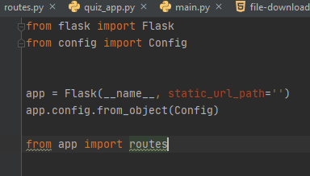
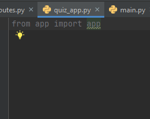
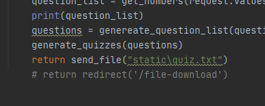
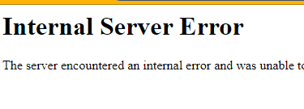

הפרויקט שלי הוא אתר שבו מרצים יכולים ליצור בקלות בחנים שמתאימים לספר לימוד מאוד נפוץ (בעתיד אני מקווה להרחיב את זה למגוון ספרים). הרעיון הוא שמרצה יוכל לבחור את השאלות שמתאימות לו והמערכת תחזיר שלושה קבצי טקסט - בוחן שנועד לעיניים אנושיות, בוחן בפורמט שמערכות דיגיטליות מסוגלות לקרוא ולהפוך לבוחן אונליין, ומפתח תשובות. המערכת גם מערבלת את סדר התשובות בכל פעם כדי ליצור בחנים קצת שונים. כבר כתבתי מאגר שאלות ואת המנוע שיוצר את הקבצים האלו. עכשיו כתבתי טופס בפלאסק שבו ניתן לסמן את השאלות שרוצים להוסיף/ כרגע יש רק ארבע שאלות לצרכי נוחות ובעתיד יהיו מעל מאה שאלות שכבר כתבתי ובתקווה עוד כמה מאות שאלות שאחרים יכתבו. הבעיה היא שלא הצלחתי למצוא איך בעצם ניתן לקבל את המידע מהטופס הזה בתור רשימה של שאלות שאותה ניתן להזין למנוע שמפיק את הקבצים. חיפשתי לא מעט ולא מצאתי תשובה. אני מבין שזה כנראה קשור לפרמטר action שבו ניתן להכניס URL שאליו ישלחו השאלות, אבל לא ממש הצלחתי להתקדם. כל הכוונה תתקבל בברכה.
{kind=link}
זה קצת שולח אותך לחפש שוב בשבוע שעבר.
חפש על אלמנטים שמתאימים להיות בתוך טופס (input וה־type־ים שלו), במקום ul.
באופן כללי יתכן שתתקשה מעט עם הרעיון שלך כי נשמע שהוא מצריך שמירת state, וזה משהו לא טריוויאלי שאמרתי מראש שעלול לעשות קצת כאב ראש 
באסה. האתר הזה היה משהו שרציתי לעשות עוד לפני שהתחלתי את הקורס (אני מלמד באוניברסיטה ותמיד רציתי לבנות כלים שיאפשרו אוטומציה של קורסים) וקיוויתי שזו ההזדמנות לעשות אותו אז הלכתי עליו במקום על עבודה עם API. אני דווקא חשבתי שהוא יהיה יותר פשוט מעבודה עם API: משתמש בוחר שאלות > אתר שולח רשימה > מנוע מפיק קבצים > אתר מביא לינק להורדה. אני מבין מהתשובה שלך שפספסתי משהו בסיסי באיך שאתרים כאלה אמורים לעבוד (למשל לא חשבתי שדבר כזה יצריך שמירת state ואני גם לא בטוח לגמרי מה הכוונה במושג הזה).
חשוב לי להבהיר משהו לגבי הקוד שצילמתי. השאלות לבחירה נמצאות בתוך תגיות
והן תואמות לקובץ פייתון שיש בו טופס פלאסק, כשהרעיון הוא שהקובץ פשוט יחזיר את רשימת השאלות שנבחרו בצ’קבוקסים. אני מנסה לעבוד בהתאם להוראות של מדריך מאוד מקיף שמצאתי (https://blog.miguelgrinberg.com/post/the-flask-mega-tutorial-part-iii-web-forms) ובינתיים אני מצליח להבין אותו ולהשתמש בו כדי ליצור את האתר, אבל הוא עובד קצת אחרת ממה ששיערתי. רשימת התשובות היא סטטית לחלוטין והיא מופיעה בקוד רק כדי שיהיה קל למשתמש לקרוא את השאלה במלואה. ניסיתי להכניס את השאלות עם התשובות, אבל מתברר שג’ינג’ה הופכת את המחרוזות המסודרות למחרוזות של שורה אחת, מה שיוצר ממשק מאוד לא נעים. בעיקרון יצרתי קודם אתר סטטי שמשתמש בטייפים של אינפוט (מצורף צילומסך) אבל זה לא ממש תואם לאיך שהוא שהמדריך מסביר עבודה עם טפסים בפלאסק. האם אני צריך לשנות כיוון?
{kind=link}
- נסה קצת למקד ולקצר את ההודעות שלך בבקשה כדי שאספיק לעזור לך בפוסטים בהמשך וכדי לקצר את זמני התגובה שלי
- אני משוכנע שתצליח לבנות מה שרצית, פשוט אם תחליט ללכת על זה כרגע זה יקח מעט יותר זמן.
- המדריך ששלחת משתמש ב־wtfforms, שהוא מודול נוסף שהופך דברים למעט מורכבים יותר. הייתי יורד ממנו.
- נסה לעבוד לפי השלבים של השבוע: קודם צייר מה שאתה רוצה, אח"כ בנה אתר סטטי וסיים אותו, אח"כ גש לטיפול ב־Flask.
- הממשק שבנית בהודעה האחרונה אחלה. חסר כפתור submit, ולקלוט בקשת GET ב־Flask שמבינה אילו checkbox־ים סומנו.
- בנוגע לעיצוב הלא נעים – לחלוטין פתיר באמצעות CSS (ר’ לייב על Bootstrap)
בהצלחה!
כרגע האפפ עובד במחשב שלי (עוד לא העלית להרוקו). באיזה מהלייבים יש את ההתייחסות לבוטסטראפ?
באזור נקודת הזמן הזו
תודה. קראתי עכשיו את המדריך על איך להעלות להירוקו ואני חושש שעשיתי קצת סלט שאני לא יודע איך לפתור. כמו שאמרתי עקבתי אחרי המדריך שצירפתי, ולכן יצרתי מבנה קבצים קצת שונה. יש לי קובץ הפעלה בשם init:

יש לי קובץ נוסף בשם routes שמנהל את ההפניות באתר:
{kind=link}
ויש עוד קובץ בשם quiz_app שממה שהבנתי מהמדריך נועד לטפל בבעיה של ייבוא מעגלי:

אז עכשיו אני לא בטוח אם אני צריך להוסיף קובץ app כמו שכתוב במדריך של הקורס או לשנות משהו בקבצים שיש לי, וייתכן שאני צריך לשנות את התוכן של ה Procfile כי לקובץ הראשי שלי קוראים quiz_app ולא app. (אני נשבע שכשהתחלתי לעבוד עם המדריך ההוא זה נראה כמו רעיון טוב).
יש משהו שמונע ממך לשנות את שם הקובץ הראשי ל־app? נראה לי כמו ללכת על בטוח.
לא. אלא אם כן זה יעשה איזו בעיה עם היבוא המעגלי. העניין הוא שיש עוד פקודות דומות כאלה גם routes אז אני תוהה אם זה יגרום לאיזו התנגשות אם אני פשוט אעתיק את הקוד הזה.
הייתי פשוט מנסה, אין הרבה מה להפסיד מזה
ביצעתי את השינוי (היה גם צורך כמובן לשנות את ההגדרה בטרמינל ל FLASK_APP=app.py) עכשיו זה רץ על המכונה שלי. שווה פשוט לנסות להעלות את זה בלי להדביק את הקוד ששמת במדריך ולקוות לטוב?
אוקיי. זה עובד בלי הקוד שצריך להדביק (תודה על העצה). עכשיו אני מבין שיש באג באפליקציה שקשור כנראה למה שאמרת לגבי שמירת state, כלומר האפליקציה מחזירה רק את הקובץ האחרון שהופק במכונה המקומית שלי, ולא יוצרת קבצים חדשים בהתאם לבחירת המשתמש. תוכל אולי להפנות אותי למקור מידע טוב כדי לנסות להתמודד עם זה? לא נראה לי שיש סיכוי שאצליח לעשות את זה בזמן, אבל כרגע זה לא שיש לי סיכוי להפיק אפליקציה אחרת.
איפה בקוד אתה יוצר קובץ?
בתוך routes. אני עושה אימפורט למנוע. המנוע מקבל מהפוסט רשימה של הצ’קבוקסים שהמשתמש בחר. הוא מחלץ ממנה את המידע הדרוש ומפיק קבצים שהוא שומר בתוך תיקיית static.
{kind=link}
{kind=link}
שים לב בבקשה לשאלה שלי: איפה בקוד אתה יוצר קובץ?
{kind=link}
כנראה שהבעיה היא באיך שהקבצים מאוחסנים בשרת. במכונה המקומית אני עושה את זה:

ומקבל את זה:
{kind=link}
כלומר הפקודה הזו אכן מפנה אותי אל הקובץ (אם כי היא לא מורידה אותו, אולי צריך בשביל זה איזה אטריביוט מיוחד או משהו). אבל כשאני מנסה את זה בלייב אני מקבל את זה:

במכונה שלי הקבצים מאוחסנים בתיקיית static שהיא ממה שהבנתי ברירת המחדל. האם יש צורך באיזו הפניה אחרת כאשר מדובר בשרת לייב? האם התיקייה הזו לא רלוונטית בגרסה החיה?
ה־Internal Server Error אומר שהבקשה לא הושלמה בהצלחה (זו שגיאת HTTP מס’ 500).
נסה לבדוק בלוגים של Heroku למה היא התרחשה.